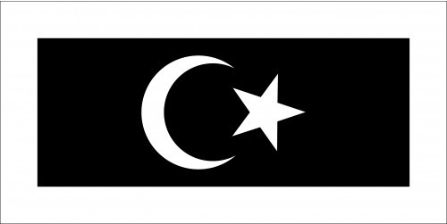

About Terengganu
Terengganu formerly spelled Trengganu or Tringganu, is a sultanate and constitutive state of federal Malaysia.The state is also known by its Arabic honorific, Dāru l-Īmān ("Abode of Faith").

Flag
First revealed in 1953, The white signifies the Sultan of Terengganu, while the black signifies the state's citizens; with the white border surrounding the black panel, the layout represents the Sultan's duty to protect his subjects. The star and crescent denote Islam as the official religion of the state.